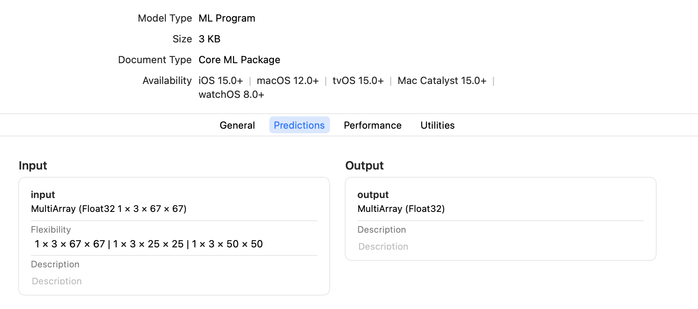
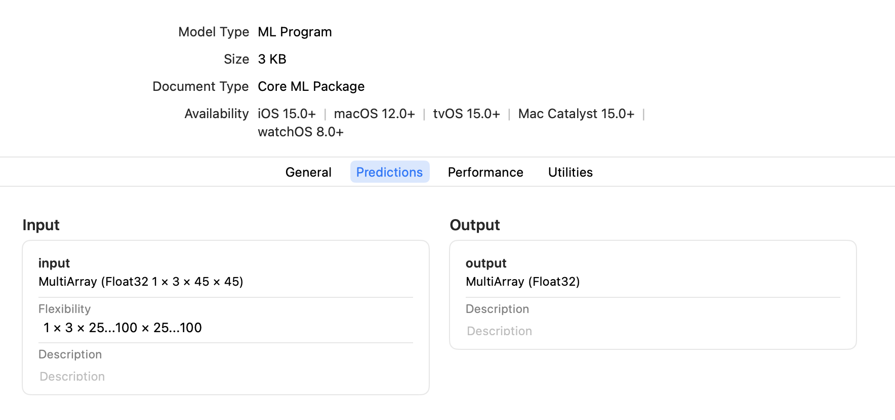

Flexible Input Shapes#
While some neural network models accept only fixed-size input, such as an image with a resolution of 224 x 224 pixels, other models require flexible input shapes that are determined at runtime. Examples are language models that work on arbitrary input lengths, and style transfer models that work on multiple resolutions.
When converting a model to Core ML using Core ML Tools, you can specify a fixed input shape or a flexible input shape. With a flexible input shape you can specify the input as follows:
Select from predetermined shapes to limit the input to selected shapes, optimizing performance.
Set a bounded range for each dimension to define the minimum and maximum for more dynamic shapes. Using a bounded range provides more opportunity for the runtime compiler to make optimizations, which is harder with an unbounded range.
Enable unbounded ranges, if necessary, for maximum flexibility.
Select From Predetermined Shapes#
To optimize performance, ensure model accuracy, or limit the range of inputs for other purposes, specify a set of predetermined shapes for input. To make Core ML models using this constraint, set EnumeratedShapes as shown in the following example.
Enumerated Shapes Provide a Performance Advantage
Use EnumeratedShapes for best performance. During compilation the model can be optimized on the device for the finite set of input shapes. You can provide up to 128 different shapes. If you need more flexibility for inputs, consider setting the range for each dimension.
The following example performs these steps:
Defines the model
TestConvModuleusingtorch.nn.Module, the base class for neural network modules, and traces the model with random input.Defines the
input_shapewithEnumeratedShapes. You can optionally specify adefaultshape, or setdefaulttoNone(or omitdefault) to use the first element inshapesas the default. The default shape loads when initiating the model.Converts the model using
input_shapeto an ML program and saves it as an ML package.Tests the model with predictions.
import coremltools as ct
import torch
import numpy as np
# Define a model for this example.
class TestConvModule(torch.nn.Module):
def __init__(self, in_channels=3, out_channels=10, kernel_size=3):
super(TestConvModule, self).__init__()
self.conv = torch.nn.Conv2d(in_channels, out_channels,
kernel_size)
def forward(self, x):
return self.conv(x)
# Trace the model with random input.
example_input = torch.rand(1, 3, 50, 50)
traced_model = torch.jit.trace(TestConvModule().eval(), example_input)
# Set the input_shape to use EnumeratedShapes.
input_shape = ct.EnumeratedShapes(shapes=[[1, 3, 25, 25],
[1, 3, 50, 50],
[1, 3, 67, 67]],
default=[1, 3, 67, 67])
# Convert the model with input_shape.
model = ct.convert(traced_model,
inputs=[ct.TensorType(shape=input_shape, name="input")],
outputs=[ct.TensorType(name="output")],
convert_to="mlprogram",
)
model.save("enumerated_shapes.mlpackage")
# Test the model with predictions.
input_1 = np.random.rand(1, 3, 25, 25)
input_2 = np.random.rand(1, 3, 67, 67)
output_1 = model.predict({"input": input_1})["output"]
print("output shape {} for input shape {}".format(output_1.shape, input_1.shape))
output_2 = model.predict({"input": input_2})["output"]
print("output shape {} for input shape {}".format(output_2.shape, input_2.shape))
You can open the saved ML package in Xcode and click the Predictions tab to display the input and output, as shown in the following figure.

Core ML Preallocates the Default Shape
Core ML preallocates the memory for the default shape, so the first prediction with the default shape is fast. The first prediction with a non-default shape may be slower, but subsequent predictions should be more optimized.
Enumerated Shapes with Multi-input Models
For a multi-input model, only one of the inputs can be marked with EnumeratedShapes; the rest must have fixed single shapes. If you require multiple inputs to be flexible, set the range for each dimension.
Set the Range for Each Dimension#
If you know that the input shape will be within a specific interval in each dimension, set the range for each dimension with RangeDim as shown in the following example.
Using a bounded range for each dimension provides more opportunity for the runtime compiler to make optimizations, which is harder to do with an unbounded range. Note also that unbounded ranges are not permitted when converting to an ML program (mlprogram).
The code in the following example performs these steps:
Defines the model
TestConvModule, and traces the model with random input.Defines the
input_shapewithRangeDim. You can optionally specify adefaultshape, or setdefaulttoNone(or omitdefault) to use thelower_boundas the default.Converts the model using
input_shapeto an ML program and saves it as an ML package.Tests the model with predictions.
import coremltools as ct
import torch
import numpy as np
# Define a model for this example.
class TestConvModule(torch.nn.Module):
def __init__(self, in_channels=3, out_channels=10, kernel_size=3):
super(TestConvModule, self).__init__()
self.conv = torch.nn.Conv2d(in_channels, out_channels,
kernel_size)
def forward(self, x):
return self.conv(x)
# Trace the model with random input.
example_input = torch.rand(1, 3, 50, 50)
traced_model = torch.jit.trace(TestConvModule().eval(), example_input)
# Set the input_shape to use RangeDim for each dimension.
input_shape = ct.Shape(shape=(1,
3,
ct.RangeDim(lower_bound=25, upper_bound=100, default=45),
ct.RangeDim(lower_bound=25, upper_bound=100, default=45)))
# Convert the model with input_shape.
model = ct.convert(traced_model,
inputs=[ct.TensorType(shape=input_shape, name="input")],
outputs=[ct.TensorType(name="output")],
convert_to="mlprogram",
)
model.save("range_shapes.mlpackage")
# Test the model with predictions.
input_1 = np.random.rand(1, 3, 25, 25)
input_2 = np.random.rand(1, 3, 67, 67)
output_1 = model.predict({"input": input_1})["output"]
print("output shape {} for input shape {}".format(output_1.shape, input_1.shape))
output_2 = model.predict({"input": input_2})["output"]
print("output shape {} for input shape {}".format(output_2.shape, input_2.shape))
You can open the saved ML package in Xcode and click the Predictions tab to display the input and output, as shown in the following figure.

Reshape Frequency Optimization Hint#
Setting the Reshape Frequency Optimization Hint to Frequent can allow flexible shaped models to run on the Neural Engine. This option can be set when loading your model:
model = ct.model.MLModel(
'path/to/the/saved/model.mlmodel',
optimization_hints={ 'reshapeFrequency': ct.ReshapeFrequency.Frequent }
)
p```
## Enable Unbounded Ranges
```{warning}
Unbounded ranges are not permitted with `RangeDim` when converting to an ML program; if no upper-bound is set (with a positive number), Core ML Tools will raise an exception. Also, if you are not using the `inputs` parameter with an ML program, and there are undetermined dimensions in input shape (for example, a TensorFlow with `"None"` in the input placeholder), the input will be sanitized to a finite number (`default_size + 1`) and Core ML Tools will raise a warning.
To enable an unbounded range for a neural network (not for an ML program), which would allow the input to be as large as needed, set the upper_bound with RangeDim to -1 for no upper limit. However, the device’s memory constraints actually determine how large the input can be. Set a maximum range for upper_bound to ensure that the model doesn’t crash at runtime for your users.
Update a Core ML Model to Use Flexible Input Shapes#
To update a model with fixed input shapes to use flexible input shapes, the best practice is to specify a flexible input shape when converting the source model to Core ML, as described in the previous sections.
However, if the source model is not available, you can still update an existing Core ML model with fixed input shapes to use flexible input shapes. Use the neural_network.flexible_shape_utils, which is a set of utilities to annotate model input/output features with flexible shape information.
Available Only for Neural Networks
The neural_network.flexible_shape_utils update the model’s specification, but do not guarantee the model’s accuracy with flexible input shapes. These utilities are available only for a neuralnetwork, not for an mlprogram.
The following code snippet shows how to update model inputs using add_multiarray_ndshape_enumeration() and set_multiarray_ndshape_range():
# Enumerated shapes and multi array inputs
from coremltools.models.neural_network import flexible_shape_utils
spec = coremltools.utils.load_spec('mymodel.mlmodel')
# to update the shapes of the first input
input_name = spec.description.input[0].name
flexible_shape_utils.add_multiarray_ndshape_enumeration(spec,
feature_name=input_name,
enumerated_shapes=[(2,4), (2,6)])
# Range shapes and multi array inputs
# -1 in upper bound represents "infinity"
flexible_shape_utils.set_multiarray_ndshape_range(spec,
feature_name=input_name,
lower_bounds=[1,2],
upper_bounds=[10,-1])
# re-initialize the mlmodel object
model = coremltools.models.MLModel("mymodel_updated.mlmodel")
API Reference#
For details, see the following API documentation: